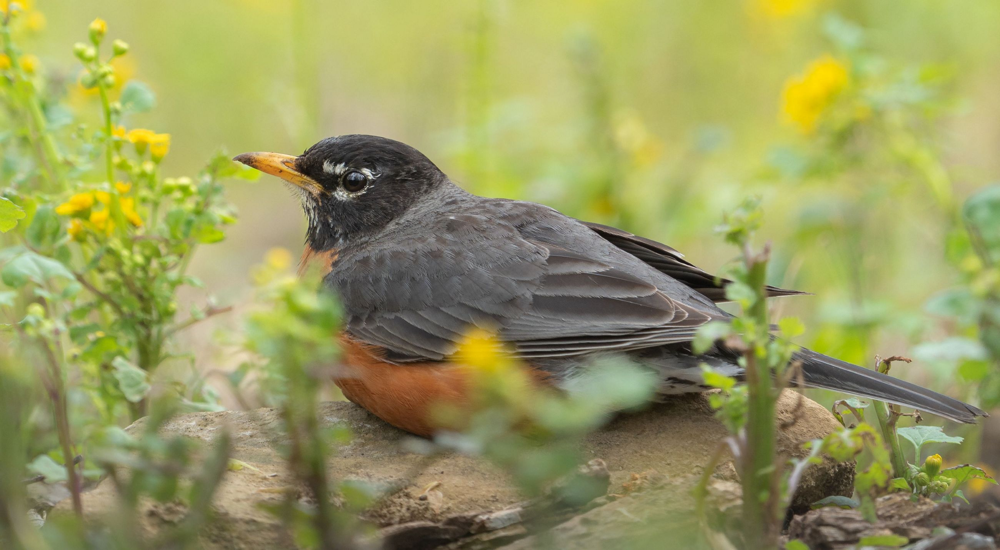
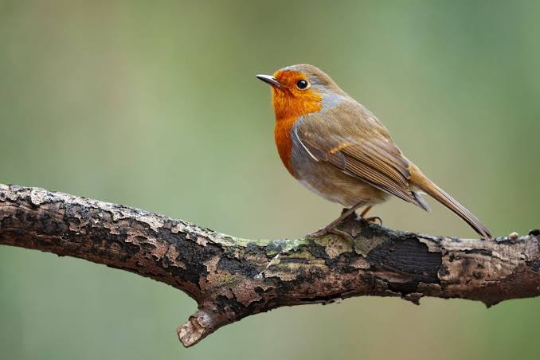
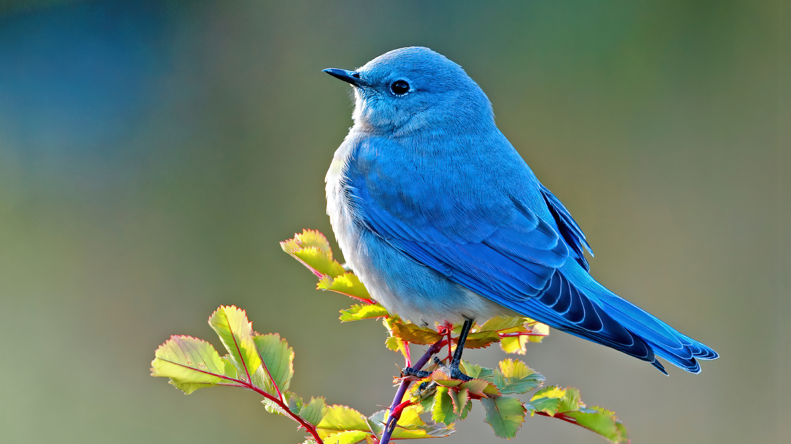
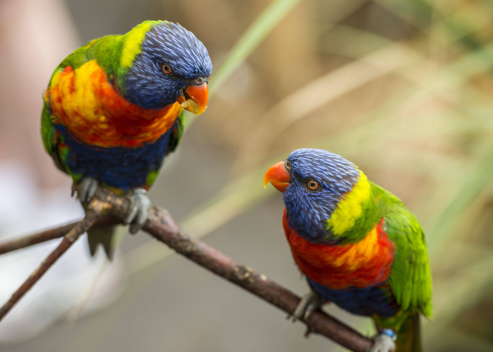

**The American Robin: A Symbol of Spring and Nature’s Rhythm Among nature’s vast variety of bird species, the American Robin (Turdus migratorius*) stands out as one of North America's most recognizable and beloved songbirds. Often celebrated as a herald of spring, its presence brings color and music to backyards, parks, and forests. **Physical Characteristics** The American Robin is easily distinguished by its striking color pattern. Adults feature a dark gray to black head and back, contrasted by a vibrant reddish-orange chest. They have a yellow bill, white markings around their eyes, and a white lower belly. Measuring between 20 to 28 centimeters (8 to 11 inches) in length, they are well-proportioned thrushes. Young robins display speckled dark spots on their lighter orange breasts before growing into their adult plumage. **Habitat and Distribution** Extremely adaptable, American Robins are found across almost the entire North American continent—ranging from Canada and Alaska down through the United States to Central Mexico. They thrive in diverse environments, including: * Open woodlands and forest edges * Agricultural fields and pastures * Suburban gardens, lawns, and urban parks They are particularly fond of short-grass lawns, which provide ideal hunting grounds for ground-dwelling invertebrates. **Diet and Feeding Behavior** A robin's diet shifts seasonally depending on food availability: * **Spring and Summer:** Their diet consists mainly of protein-rich invertebrates such as earthworms, caterpillars, beetles, and grubs. Robins are famous for their hunting posture—standing still on a lawn, tilting their head to locate worms, and quickly pulling them from the soil. * **Autumn and Winter:** As insects become scarce, they transition to a diet dominated by berries, fruits, and seeds, often gathering in large nomadic flocks to search for food. **Nesting and Reproduction** Robins are among the earliest birds to breed each spring. The female constructs a cup-shaped nest using twigs, coarse grass, and mud, lining the inside with fine grass. These nests are built in tree forks, dense shrubs, or on man-made ledges. She lays a clutch of 3 to 5 smooth, bright light-blue eggs—a distinct shade commonly known as "robin's-egg blue." After an incubation period of about 14 days, the chicks hatch and are fed by both parents. The fledglings leave the nest within two weeks. **Ecological Importance** Beyond their aesthetic and musical appeal, American Robins play a crucial role in ecosystems. By consuming large quantities of insects, they help control pest populations. Additionally, their fruit-heavy winter diet aids in seed dispersal across various habitats. Their clear, musical whistling song remains one of the defining sounds of the North American countryside and suburbi

BackThe European Robin The European Robin (Erithacus rubecula), commonly known simply as the robin, is a small insectivorous passerine bird belonging to the chat family. Famous for its vibrant orange-red breast, face, and throat, this charming species is a familiar and cherished sight across European gardens, woodlands, and parks. Appearance & Characteristics An adult European Robin measures approximately 12.5 to 14 centimeters in length. It features an olive-brown back and wings, a whitish belly, and a distinctive bright orange breast framed by a subtle bluish-grey border. Its large, round dark eyes give it an alert and inquisitive expression. Behavior & Habitat Unlike many songbirds, both male and female robins sing throughout the year and fiercely defend their feeding territories. They are famously tame and friendly towards gardeners, often perched nearby to catch worms and insects revealed by freshly turned soil. Diet & Nesting Diet: Primarily beetles, worms, flies, spiders, as well as fruits and berries during colder months. Nesting: Builds cup-shaped nests in sheltered spots like tree hollows, climbing ivy, or man-made nest boxes. Clutch: Lays 4 to 6 speckled eggs during the spring breeding season. Deeply rooted in folklore and culture, the European Robin remains an enduring emblem of nature, warmth, and winter cheer.

BackMountain Bluebird The bird in the image is a Mountain Bluebird (Sialia currucoides), a small and strikingly vibrant thrush native to western North America. Physical Appearance Male: Features brilliant turquoise-blue plumage across its head, back, and wings, fading to a lighter sky-blue chest and a white lower belly. Female: Display a subtle brownish-gray color on their body, accented with delicate blue highlights on their wings, tail, and rump. Features: Sleek, lightweight body structure with a thin black beak and dark eyes designed for spotting insects from a distance. Habitat and Range Location: Inhabits open high-elevation areas, including mountain meadows, subalpine prairies, and open pine woodlands across Western Canada and the United States. Migration: Migrates southward or to lower elevations during harsh winter months to seek milder climates and available food. Behavior and Diet Feeding Style: Highly agile flyers that often hover in place like a kestrel before dropping down to capture prey. Diet: Primarily feeds on insects such as grasshoppers, beetles, caterpillars, and spiders; supplements its diet with berries and small fruits during winter. Ecological Role Nest Habits: Cavity nesters that construct nests made of twigs and grasses inside tree hollows, old woodpecker holes, or man-made nest boxes. Importance: Serves as a natural form of pest control, helping maintain balance within mountain ecosystems while contributing to seed dispersal. Would you like more details about their nesting habits, conservation status, or tips on attracting them to birdhouses?

Back
The Impact of Artificial Intelligence on Modern Education**
Introduction
Artificial Intelligence (AI) has rapidly transitioned from a theoretical concept to an essential tool shaping the landscape of modern education. In today's digital era, integrating AI into academic environments is fundamentally changing how students learn and how educators teach. By providing personalized support, optimizing administrative efficiency, and offering instant access to extensive repositories of knowledge, artificial intelligence is expanding the boundaries of traditional classrooms.
Personalized Learning Experiences
One of the most significant advantages of artificial intelligence in education is its ability to deliver personalized learning tailored to individual needs. Traditional educational frameworks often rely on a standardized approach, which may leave struggling students behind or fail to challenge advanced learners. AI-powered adaptive platforms analyze a student's strengths, weaknesses, and preferred learning paces in real time. Consequently, these systems dynamically generate customized study materials, practice exercises, and targeted feedback, ensuring every student can master concepts effectively.
Artificial Intelligence is not replacing teachers, but rather empowering them to create more engaging, tailored, and accessible educational environments for all learners."*
Empowering Educators and Efficiency
In addition to supporting students, artificial intelligence significantly enhances educator productivity. Teachers spend a considerable portion of their schedules on routine administrative duties, such as grading assessments, managing attendance, and structuring lesson schedules. Automated AI algorithms can seamlessly handle these repetitive tasks, freeing up valuable time for teachers. As a result, educators can dedicate more attention to direct instruction, student mentorship, and interactive classroom discussions.
#### **Overcoming Challenges**
Despite these remarkable benefits, incorporating artificial intelligence into educational institutions presents critical challenges that must be addressed. Ethical considerations regarding student data privacy, potential algorithmic bias, and equitable access to advanced technology remain significant concerns. Furthermore, relying excessively on automated tools could hinder the development of critical thinking, creativity, and interpersonal communication skills. Therefore, striking a balanced integration is essential.
#### **Conclusion**
In conclusion, artificial intelligence holds transformative potential for global educational systems. When implemented thoughtfully alongside skilled human guidance, AI serves as a powerful catalyst for inclusive, high-quality, and adaptive learning experiences for generations to come.